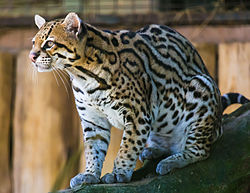
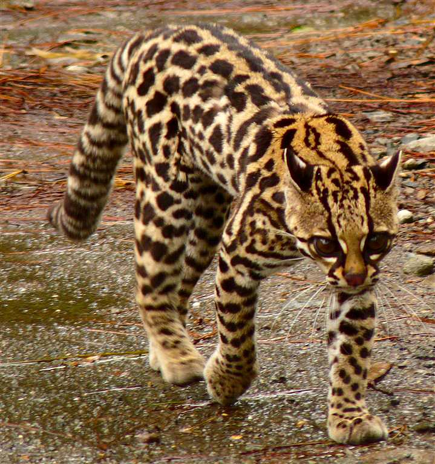
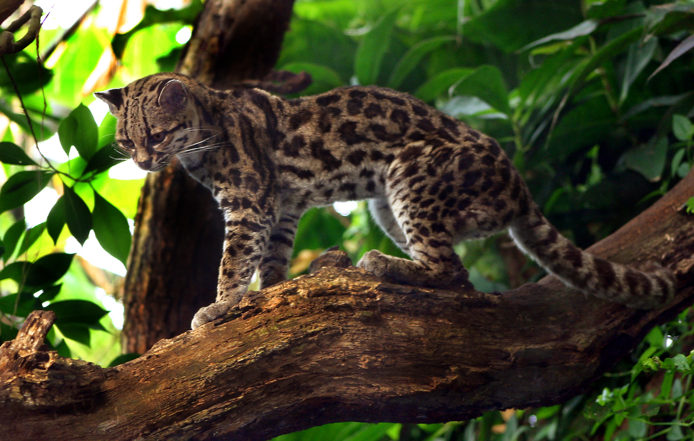
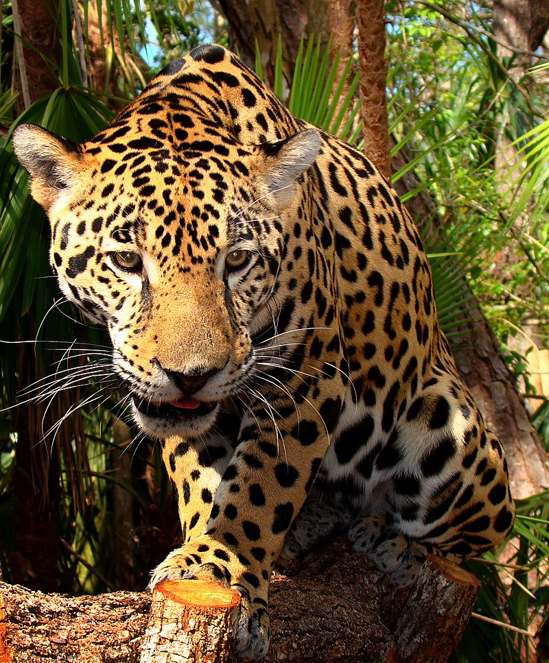
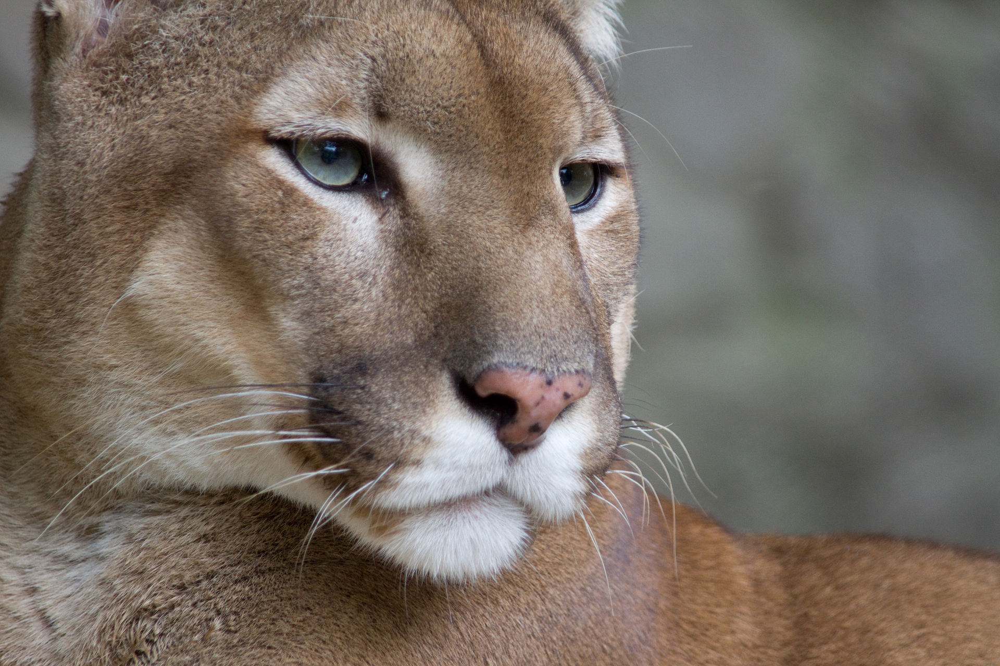
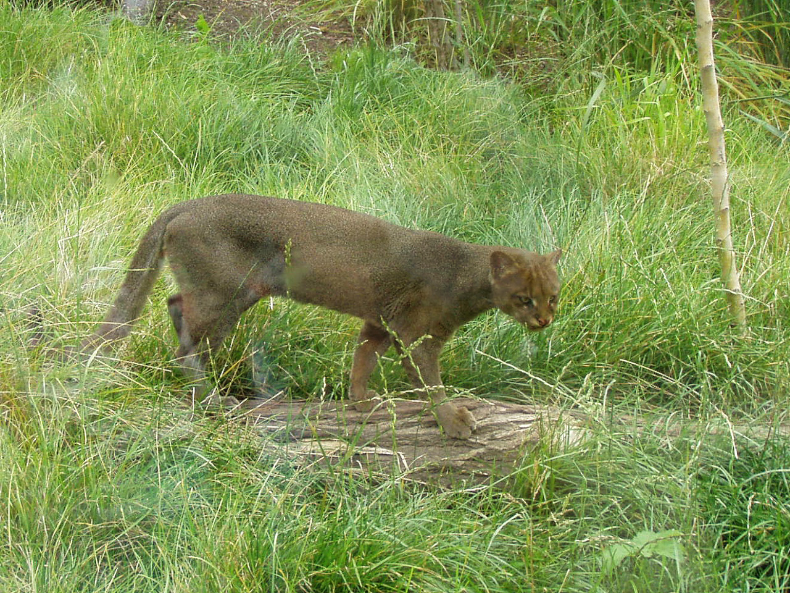

Felidae es una familia del orden carnivoro comúnmente conocidos como gatos. El témino "gato" se usa tanto para referirse a los felinos en general, como al gato doméstico o Felis catus .
Todos los felinos son carnívoros y, en la mayoría de los casos, son predadores que acehan a sus presas de manera solitaria.Los felinos salvajes están presentes en África, Europa, Asia y América. Algunos están habituados los hábitats boscosas, otros a los ambientes áridos y algunos incluso a los humedales y las montañas. Sus patrones de actividad varían desde los nocturnos hasta los crepusculares y los diurnos, dependiente de las presas que prefieren.
En Costa Rica hay seis especies de felinos silvestres:
| Nombre científico | Nombre común | Longitud de cabeza y cuerpo | Longitud de la cola | Peso | Estado de conservación | Imagen |
|---|---|---|---|---|---|---|
| Leopardus pardalis | manigordo,ocelote | 70 - 90 cm | 30 - 40 cm | 11 kg | LC(Preocupación menor) |  |
| Leopardus tigrinus | caucel,tigrillo | 30 - 78 cm | 20 - 42 cm | 2 - 3 kg | VU(Vulnerable) |  |
| Leopardus wiedii | caucel,tigrillo | 40 - 60 cm | - | 3.5 kg | NT(Casi amenazado) |  |
| Panthera onca | tigre, jaguar | 162 - 183 cm | 75 cm | 36 - 160 kg | NT(Casi amenazado) |  |
| Puma concolor | puma, león de montaña | 150 - 170 cm | 70 - 100 cm | 100 - 120 kg | LC(Preocupación menor) |  |
| Puma yagouaroundi | Puma yagouaroundí, león breñero | 50 - 70 cm | 30 - 60 cm | 3.5 - 9.1 kg | LC(Preocupación menor) |  |